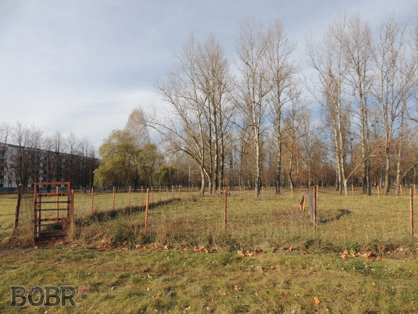
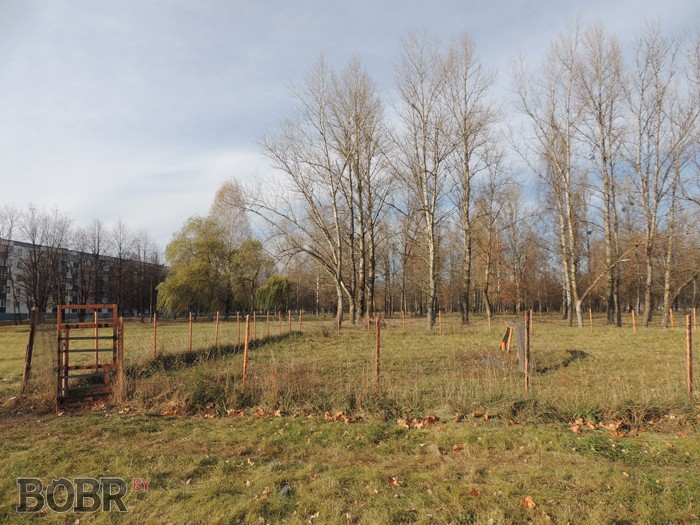

На карте наглядно видно, где расположены площадки для выгула собак в Бобруйске. Не совсем ясно, что делать жителям других районов. Площадки, на которых побывал наш корреспондент:

 

Вопрос выгула собак в Бобруйске довольно актуален. Можно бесконечно спорить между «как надо и как возможно», но определённо нужно искать пути решения проблемы. А пока будем обсуждать и частенько наблюдать подобную картину: